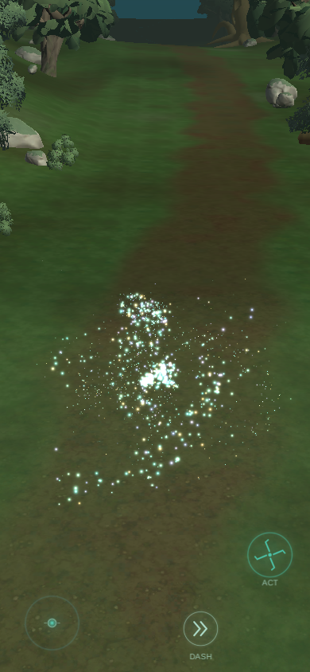
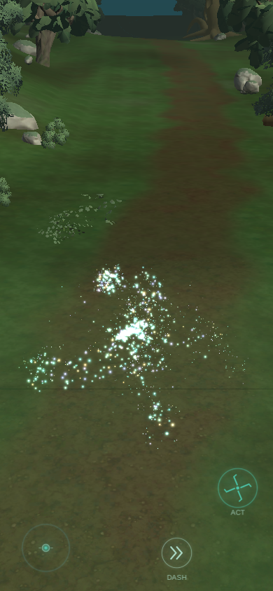
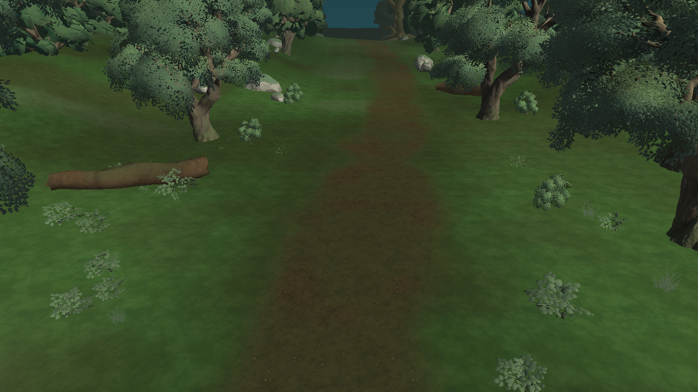
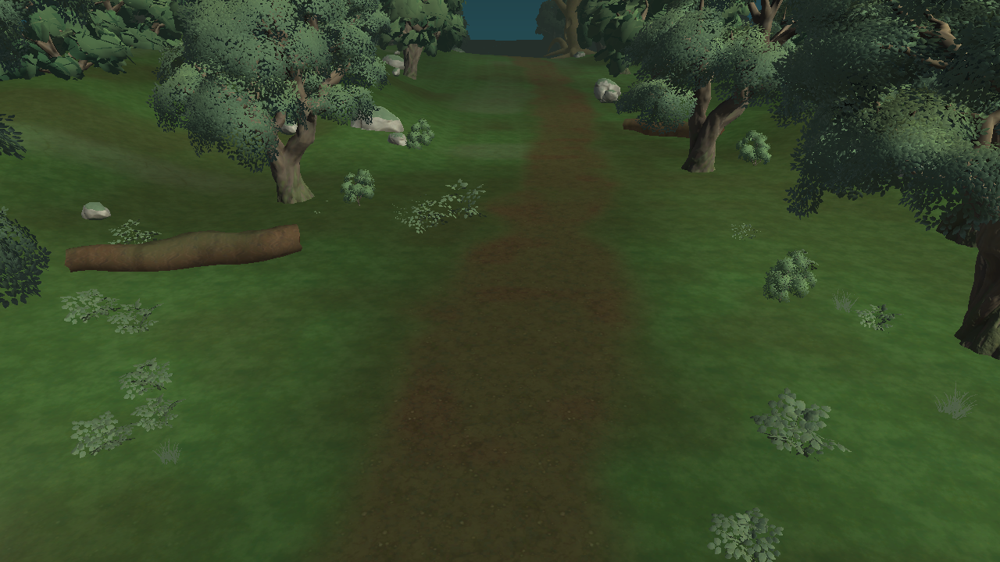
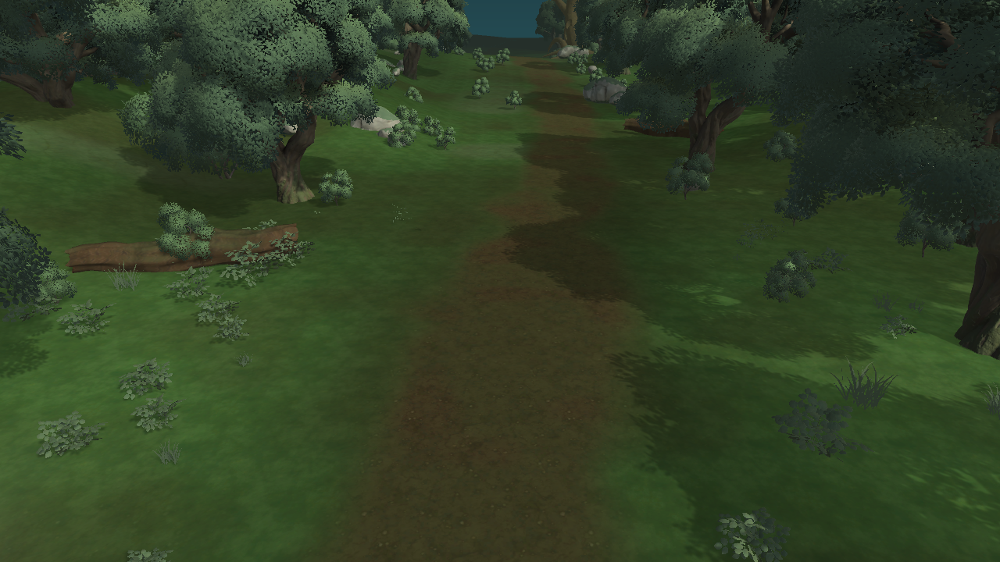
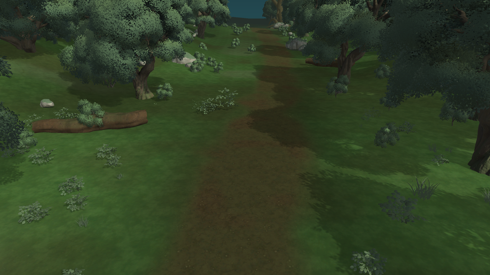

道沿いの植生 — 配置前後
同じ森林の同じカメラで比較。390×844のプレイ画面で葉が左右に切れていたため、最初の群落を14〜40m先へ動かした。道端の中景に大小の植物をまとめ、歩行路には衝突物を増やさない。Blenderで試したシダは角張った見た目のため不採用。以前制作した樹木と倒木のモデルは継続使用。
390×844 縦画面の実プレイ確認


Unityの同一カメラを使用したWebGL/Highの比較




まだ林床全体は単調で、ワールドの最終美術品質とは異なります。WebGLで遊んで確認